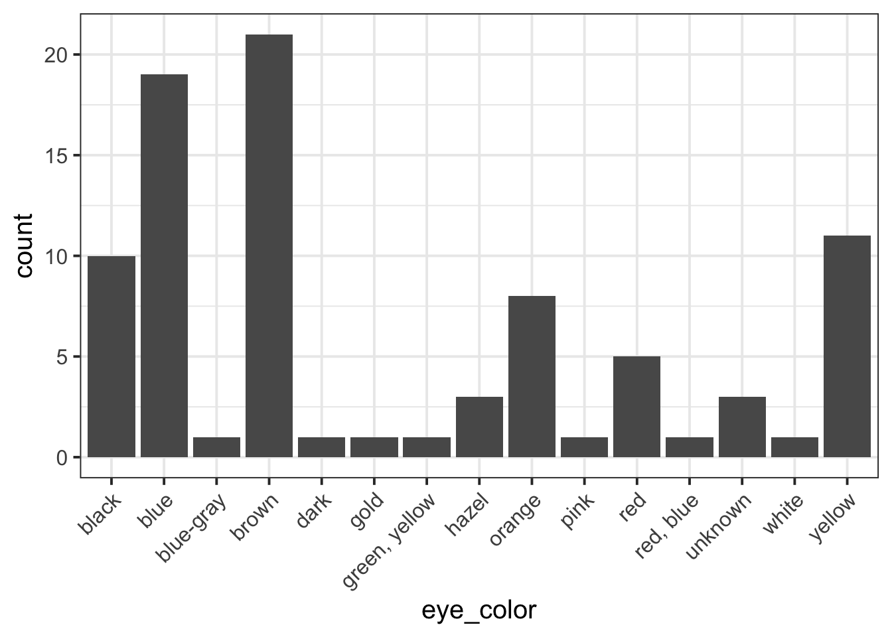
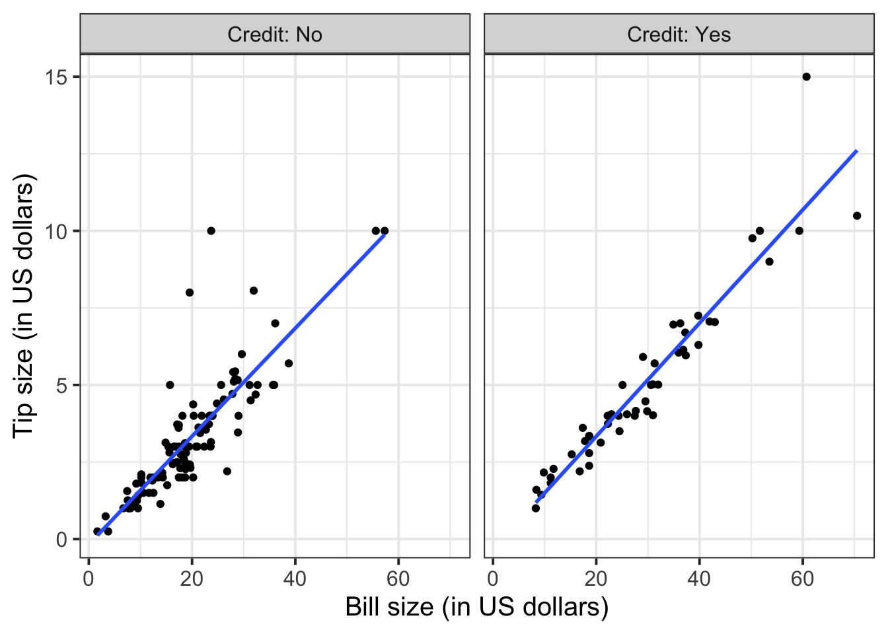

Formative report A
Semester 1 - Week 5
Instructions and data were released in week 1.
This week: Submission of Formative report A
- Your group must submit one PDF file for formative report A by 12 noon on Friday 18 October 2024.
- No extensions are possible for group-based reports, see “Assessment Information” page on LEARN.
- If you don’t submit by the deadline, you won’t receive written formative feedback.
- The submitted report must be a PDF file of maximum 6 sides of A4 paper. Keep the default settings in terms of Rmd knitting font and page margins.
- At the end of the file, you will place the appendices and these will not count towards the six-page limit.
- You can include an optional appendix (Appendix A) for additional tables and figures which you can’t fit in the main part of the report;
- You must include a compulsory appendix (Appendix B) listing all of the R code used in the report. This is created automatically if you end your file with the following section, which is already included in the template Rmd file:
# Appendix: R code ```{r ref.label=knitr::all_labels(), echo=TRUE, eval=FALSE} ``` - Excluding the Appendix, the report should not include any reference to R code or functions, but be written for a generic reader who is only assumed to have a basic statistical understanding without any R knowledge.
- To submit go to the course Learn page, click “Assessment”, then click “Submit Formative Report A (PDF file only)”.
- Only one person per group is required to submit on behalf of the entire group.
- If more than one submission is made for a group, the most recent one will be considered.
- The Turnitin submission title should be the group name, e.g. Group 5.K
- Once you have submitted, let your group know on the Group Discussion Space.
- Ensure that everyone in the group has joined the group on LEARN. Otherwise, you won’t see the feedback.
- In Week 6 (next week)
- There will be no lectures
- There will be no labs
- We will post the example solutions for Formative Report A and you will be asked to study them during week 6 while we’ll be giving feedback on your submission.
- We will return your submission with feedback before week 7.
1 Tasks
For formative report A, you will be asked to perform the following tasks, each related to a week of teaching in this course.
This week’s task is highlighted in bold below. Please only focus on completing that task this week. In the next section, you will also find guided sub-steps you may want to consider to complete this week’s task.
A1) Read the data into R, inspect it, and write a concise introduction to the data and its structure
A2) Display and describe the categorical variables
A3) Display and describe six numerical variables of your choice
A4) Display and describe a relationship of interest between two or three variables of your choice
A5) Finish the report write-up, knit to PDF, and submit the PDF for formative feedback
2 A5 sub-tasks
This week you will only focus on task A5. Below there are some guided sub-steps you may want to consider to complete task A5.
Tip
To see the hints, hover your cursor on the superscript numbers.
Ensure all group members have joined the group on LEARN. If you have not done so yet, go to the course LEARN page, click “Groups” from the top menu bar, find the group having the same name as your table label, and click Join.
Reopen last week’s Rmd file, as you will continue last week’s work and build on it.1
Did you install tinytex? If yes, go to the next bullet point. If not, check the hint. This package is required to compile an Rmd file into a PDF for submission.2
Formatting tip: Hiding R code or ouput
To not show the code of an R code chunk, and only show the output, write:
```{r, echo=FALSE}
# code goes here
```To show the code of an R code chunk, but hide the output, write:
```{r, results='hide'}
# code goes here
```To hide both text output and figures, use:
```{r, results='hide', fig.show='hide'}
# code goes here
```To hide both code and output of an R code chunk, write:
```{r, include=FALSE}
# code goes here
```
Formatting tip: Reducing figure size
You could place multiple panels into a single figure using the functions | and / from the patchwork package.
You could adjust the figure height and width by playing with a few options for the numbers fig.height = ? and fig.width = ?, for example 5 and 4, or 12 and 8, and so on. Please note this is typically found by trial and error. Keep in mind, however, that the figure labels should still be legible in the plot you show.
```{r, fig.height = 5, fig.width = 4}
# your code to display the figure here
```- Organise the Rmd file to have the following structure:
---
title: "Formative Report A (Group <NUMBER>.<LETTER>)"
author: "<insert exam numbers here, e.g. B001, B002, B003, B004, B005>"
date: "<insert date here>"
output: bookdown::pdf_document2
toc: false
---This is the metadata block. It includes the:
- document title
- author name
- date (to leave empty, use an empty string
"") - the output type
- whether or not to display the Table of Contents (TOC)
The output type could be html_document, pdf_document, etc. We use bookdown::pdf_document2 so that we can reference figures, which pdf_document doesn’t let you do. The code bookdown::pdf_document2 simply means to use the pdf_document2 type from the bookdown package.
```{r setup, include=FALSE}
knitr::opts_chunk$set(echo = FALSE, message = FALSE, warning = FALSE)
```This is the setup chunk and should always be included in your Rmd document. It sets the global options for all code chunks that will follow.
In your knitted file:
- If
echo=FALSE, the R code in chunks is not displayed. If TRUE, it is. - If
message=FALSE, information messages are not displayed. If TRUE, they are. - If
warning=FALSE, warning messages are not printed. If TRUE, they are.
If you want to change the setting in a specific code chunk, you can do so via:
```{r, echo=TRUE}
# A code chunk
``````{r, include=FALSE}
# Week 1 code below
library(tidyverse)
# Week 2 code below
pltEye <- ggplot(starwars, aes(x = eye_color)) +
geom_bar()
# Week 3 code below
# week 4 code below
```This code chunks contains your rough work from each week. Give names to plots and tables, so that you can reference those later on. The option include=FALSE hides both code and output.
To run each line of code while you are working, put your cursor on the line and press Control + Enter on Windows or Command + Enter on a macOS.
# Introduction
Write here a concise introduction to the data, the variables, and anything worth
of notice in the dataset.
# Analysis
Present here your tables, plots, and results. In the code chunk below, you do
not need to put the chunk option `echo=FALSE` as you set this option globally
in the setup chunk.
```{r}
pltEye
```
If you didn't set it globally, you would need to put it in the chunk options:
```{r, echo=FALSE}
pltEye
```
More text...
# Discussion
Write up your take home messages here...This contains your actual textual reporting, as well as tables and figures. To show in place a plot previously created, just include the plot name in a code chunk with the option echo=FALSE to hide the code but display the output.
# Appendix A: Additional figures and tables
Include here additional tables and figures, with captions, and properly
referenced. These should be used somewhere in the text, do not include tables or
figures which are not referenced anywhere in your writing.If you don’t need Appendix A, because all your figures and tables fit in the page limit, you can delete it.
# Appendix B: R code
Do not edit the code chunk below, but remove this paragraph of text before
submitting.
```{r ref.label=knitr::all_labels(), echo=TRUE, eval=FALSE}
```This special code chunk (do not edit it) takes all code above and places it here into Appendix B for you. As such, it allows the marker to see the code you used to obtain your results. Please note that only the code should be visible in the appendix, no output. Hence why the options are echo=TRUE (show the code), but eval=FALSE (do not evaluate/run the code).
The appendices do not count towards the 6-page limit.
Successful knitting checklist
If you encounter errors when knitting the Rmd file, go through the following checklist to try finding the source of the errors.
Knit the document to PDF: click File > Knit Document.
-
Submit the PDF file on Learn:
- Go to the Learn page of the course
- Click Assessments
- Click Submit Formative Report A (PDF file only)
- Follow the instructions
Formatting tips: Referencing figures
First, you need to pick a unique label for the code chunk that displays the figure, in this case shortLabel but you should use a more descriptive name.
```{r shortLabel, fig.cap = "Figure caption"}
pltEye <- ggplot(starwars, aes(x = eye_color)) +
geom_bar() +
theme(axis.text.x = element_text(angle = 45, hjust = 1))
pltEye
```To reference a figure, for example the one above, you would
write see Figure \@ref(fig:shortLabel).which, when you Knit to PDF, becomes:
To reference a figure, for example the one above, you would write see Figure 1.
Formatting tips: Referencing tables
Say you created a tibble and stored it into tblEye. Please make sure you haven’t made it into a kbl() yet. Create a code chunk to display tblEye, and then pipe it into kbl() to make a table for a PDF file. You can also specify the table caption (caption = ““), whether to include tab lines (booktabs = TRUE), and whether to round to 2 digits (digits = 2). To reference a table you need to pick a unique label for the code chunk that displays the table, in this case anotherLabel but you should use a more descriptive name.
```{r anotherLabel, echo=FALSE}
tblEye |>
kbl(booktabs = TRUE, caption = "Short table caption")
```| eye_color | n |
|---|---|
| black | 10 |
| blue | 19 |
| blue-gray | 1 |
| brown | 21 |
| dark | 1 |
| gold | 1 |
| green, yellow | 1 |
| hazel | 3 |
| orange | 8 |
| pink | 1 |
| red | 5 |
| red, blue | 1 |
| unknown | 3 |
| white | 1 |
| yellow | 11 |
The table is referenced as, see Table \@ref(tab:anotherLabel).Which, when you knit to PDF, is displayed as:
The table is referenced as, see Table 1.
For details on styling PDF tables, see this link.
3 Worked example
Consider the dataset available at https://uoepsy.github.io/data/RestaurantTips.csv, containing 157 observations on the following 7 variables:
| Variable Name | Description |
|---|---|
| Bill | Size of the bill (in dollars) |
| Tip | Size of the tip (in dollars) |
| Credit | Paid with a credit card? n or y |
| Guests | Number of people in the group |
| Day | Day of the week: m=Monday, t=Tuesday, w=Wednesday, th=Thursday, or f=Friday |
| Server | Code for specific waiter/waitress: A, B, or C |
| PctTip | Tip as a percentage of the bill |
These data were collected by the owner of a bistro in the US, who was interested in understanding the tipping patterns of their customers. The data are adapted from Lock et al. (2020).
# A tibble: 6 × 7
Bill Tip Credit Guests Day Server PctTip
<dbl> <dbl> <chr> <dbl> <chr> <chr> <dbl>
1 23.7 10 n 2 f A 42.2
2 36.1 7 n 3 f B 19.4
3 32.0 5.01 y 2 f A 15.7
4 17.4 3.61 y 2 f B 20.8
5 15.4 3 n 2 f B 19.5
6 18.6 2.5 n 2 f A 13.4We can replace each factor level with a clearer label:
The percentage of total bill has a maximum value of 221, which seems very strange. Someone is very unlikely to tip more than their bill total. In this case 221% of their bill value seems unlikely.
Let’s inspect the row where PctTip is greater than 100:
tips |>
filter(PctTip > 100)# A tibble: 1 × 7
Bill Tip Credit Guests Day Server PctTip
<dbl> <dbl> <fct> <dbl> <fct> <fct> <dbl>
1 49.6 NA Yes 4 Thursday C 221This code means: take the data tips and then filter it to only keep the rows where PctTip is larger than 100. You can also provide a condition using other comparison operators such as ==, >=, <=, >, <, …
With a bill of 49.59, the tip would be 109.59 dollars:
49.59 * 221 / 100[1] 109.5939Furthermore, we also notice that the tipping amount is not available (NA). The corresponding value in the percentage of total tip seems likely an inputting error, perhaps due to double typing the leading 2 when recording the data. We will set that value to not available (NA) with the following code:
tips$PctTip[tips$PctTip > 100] <- NAConsider, for example, the relationship between bill and tip size. As these are two numerical variables, we visualise the relationship with a scatterplot:
ggplot(tips, aes(x = Bill, y = Tip)) +
geom_point() +
labs(x = "Bill size (in US dollars)",
y = "Tip size (in US dollars)")
We can numerically summarise this relationship with the covariance between the two variables:
The relationship looks roughly like a line. You can superimpose a “best-fit” line with the function geom_smooth(method = lm, se = FALSE). The argument method = lm tells to fit a line (in R this is called a linar model, lm), and se = FALSE tells R to not plot the uncertainty bands.
ggplot(tips, aes(x = Bill, y = Tip)) +
geom_point() +
labs(x = "Bill size (in US dollars)",
y = "Tip size (in US dollars)") +
geom_smooth(method = lm, se = FALSE)
You will only learn how to find the functional relationship between two variables in the second-year course DAPR2, so for now I will give it to you:
\[ y = -0.26 + 0.18 * x \qquad \text{where} \qquad \begin{cases} x = \text{Bill} \\ y = \text{Tip} \end{cases} \]
What is the predicted tip for a bill of 50 US dollars? Let’s do the computation:
-0.26 + 0.18 * 50[1] 8.74From the plot above, a tip of 8.74 US dollars seems roughly right!
Let’s find the tips for bills of size 20, 40, 60.
# A tibble: 3 × 2
bills tips
<dbl> <dbl>
1 20 3.34
2 40 6.94
3 60 10.5 To investigate the relationship between bill and tip size for those who paid by credit card and those who didn’t we can create faceted scatterplots:
ggplot(tips, aes(x = Bill, y = Tip)) +
geom_point() +
labs(x = "Bill size (in US dollars)",
y = "Tip size (in US dollars)") +
facet_wrap(~Credit, labeller = "label_both")
You can also fit a best-fit line by payment method:
ggplot(tips, aes(x = Bill, y = Tip)) +
geom_point() +
labs(x = "Bill size (in US dollars)",
y = "Tip size (in US dollars)") +
facet_wrap(~Credit, labeller = "label_both") +
geom_smooth(method = lm, se = FALSE)
To extend the lins for the full range of the x-axis, you can use the option fullrange = TRUE:
ggplot(tips, aes(x = Bill, y = Tip)) +
geom_point() +
labs(x = "Bill size (in US dollars)",
y = "Tip size (in US dollars)") +
facet_wrap(~Credit, labeller = "label_both") +
geom_smooth(method = lm, se = FALSE, fullrange = TRUE)
Again, you will not know how to find out the functional relationship between the variables within each group until the course DAPR2 in 2nd year, so I will give it to you.
For those who did not pay by credit card:
\[ y = -0.17 + 0.18 * x \qquad \text{where} \qquad \begin{cases} x = \text{Bill} \\ y = \text{Tip} \end{cases} \]
For those who paid by credit card:
\[ y = -0.34 + 0.18 * x \qquad \text{where} \qquad \begin{cases} x = \text{Bill} \\ y = \text{Tip} \end{cases} \]
4 Student Glossary
To conclude the lab, add the new functions to the glossary of R functions that you started last week.
| Function | Use and package |
|---|---|
geom_smooth |
? |
tibble |
? |
knitr::opts_chunk$set() |
? |
References
Lock, Robin H, Patti Frazer Lock, Kari Lock Morgan, Eric F Lock, and Dennis F Lock. 2020. Statistics: Unlocking the Power of Data. John Wiley & Sons.
Footnotes
Hint: access the Rmd file from the Group Discussion Space.
If last week’s driver hasn’t uploaded it yet, please ask them to share it with the group via the Group Discussion Space, email, or Teams.
To download the file from the server, go to the RStudio Files pane, tick the box next to the Rmd file, and select More > Export.↩︎-
Installing tinytex. Copy the line below and paste it into the console:
install.packages("tinytex")press Enter. Copy and paste the line below into the console:
press Enter. Type Y and press Enter again.↩︎